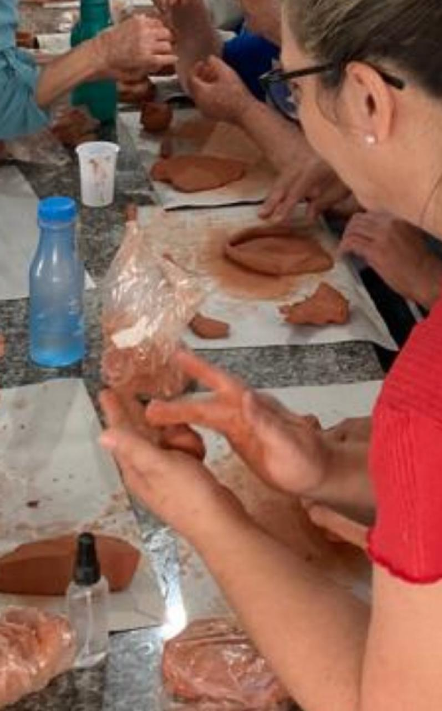

1. Promove a comunicação eficaz:
2. Estimula a criatividade e a inovação:
3. Aumenta a empatia e a compreensão interpessoal:
4. Promove o autoconhecimento e o desenvolvimento pessoal:
5. Reduz o estresse e melhora o bem-estar:
Saiba mais >>>
A arte cerâmica faz a conexão com o inconsciente, trabalhando de forma lúdica, temas importantes, trazendo autoconhecimento e consciência para a mudaça comportamental.
Ofereça uma oficina aos seus funcionários e doe outra para uma entidade parceira
Atividades com entidades parceiras apoiando jovens em vulnerabilidade social
4 encontros de 3h cada ( 2 para empresa e 2 para projeto social )
2 professores para 10 participantes
Trabalhamos temas adaptados a realidade da empresa.
Divulgação dos resultados da ação.
Todo o material ( argila, utensilhos e acessórios. )
No espaço Farol, com apoio de designer de interiores para organizar uma exposição incrivel.
As peças criadas pelas entidades parceiras serão vendidas e toda a renda arrecadada será revertida para a AJIDEVI.
A marca da empresa terá espaço de divulgação nas exposições e nas mídias, como patrocinador.